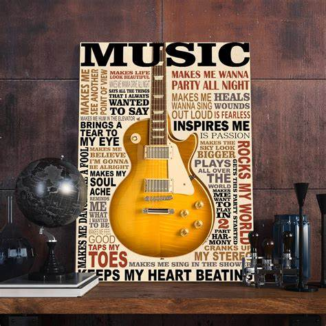
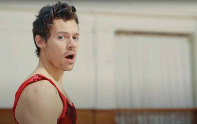
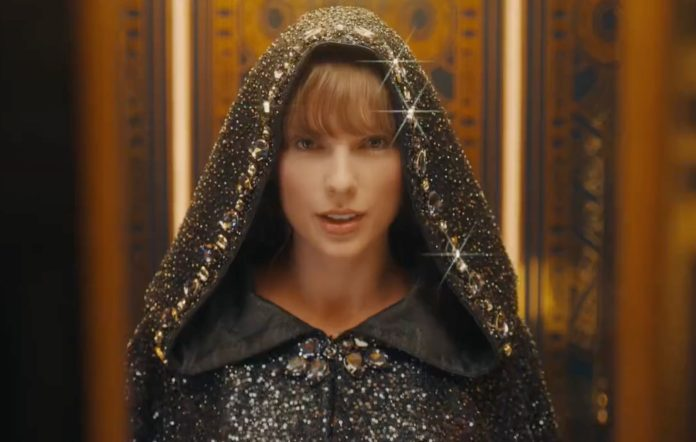

Un récord musical es un logro alcanzado por un artista o grupo en un determinado momento, generando una trascendencia histórica y una marca a superar.


° Harry Style domina el Billboard Hot 100 durante el 2022, con un total de 15 semanas en el primer lugar con su tema "As It Was", lead-single de su tercer álbum de estudio: "Harry´s House".

° Taylor Swift hace historia en los 64 años que tiene el Billboard Hot 100, por dominar por completo el top 10 en una misma semana con su nuevo albúm ¨Midnights´´; superando a Drake que ostentaba el record con nueve ingresos. Su decimotercer álbum es encabezado por su tema principal: "Anti-hero", además de contar con un único featuring con la cantante americana Lana del Rey, en una hermosa balada llamada "Snow On The Beach".